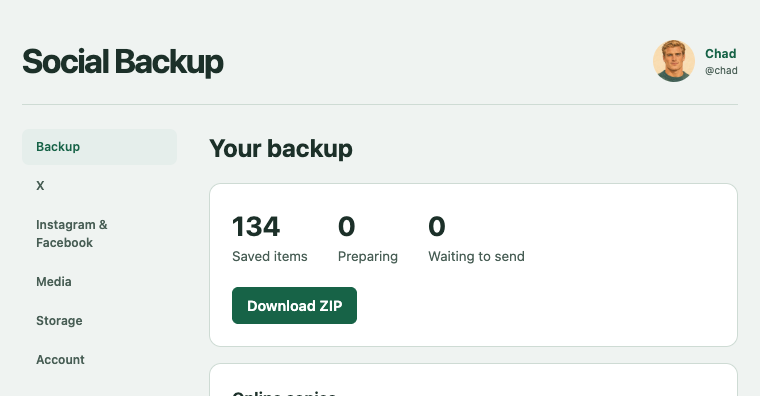

Back up your posts.
Automatically back up your X, Instagram and Facebook posts as you scroll your profiles. The extension shares confirmed public posts with your chosen Nostr relays. Private posts and posts it can’t verify stay in your local archive.
Get the extension
Downloads
Chrome
Download ZIP- Unzip the download.
- Open
chrome://extensionsand enable Developer mode. - Choose Load unpacked and select the folder.
Firefox 140+
Download ZIP- Open
about:debugging#/runtime/this-firefox. - Choose Load Temporary Add-on and select the ZIP.
Firefox removes temporary add-ons on restart, so export your archive first.
Safari Experimental
On a Mac with Xcode, unzip the package into a folder named nostr-backup-safari, then run this command from its parent folder. Open the generated Xcode project and build the app.
xcrun safari-web-extension-packager nostr-backup-safari --app-name "Nostr Backup" --macos-onlyYour first backup
From social profiles
Open the extension and create a Nostr profile or sign in with your private key. Under X or Instagram & Facebook, enter your username, enable backup and choose Save. Visit your profile and scroll to capture posts.
From Nostr
Sign in with your Nostr public key. Under Backup → Relays, select your relays. Choose Sync now to import your posts. With Sync daily enabled, choose Broadcast and import to copy missing posts between relays.
Local copy
Choose Backup → Download ZIP. To include attachments, run Media → Back up media first.
